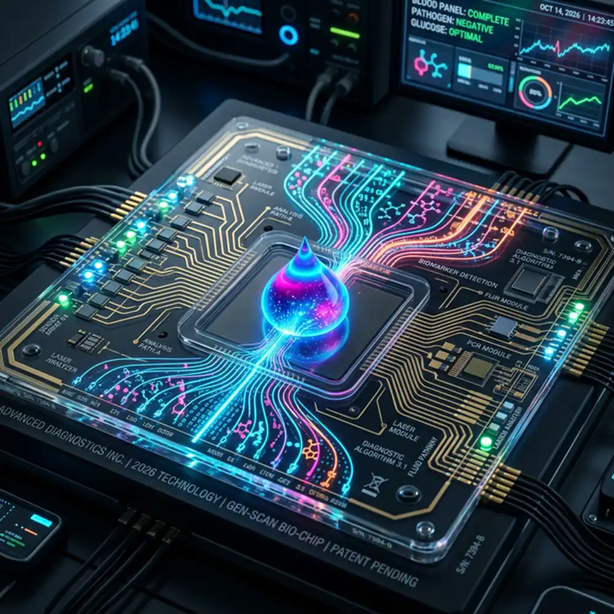
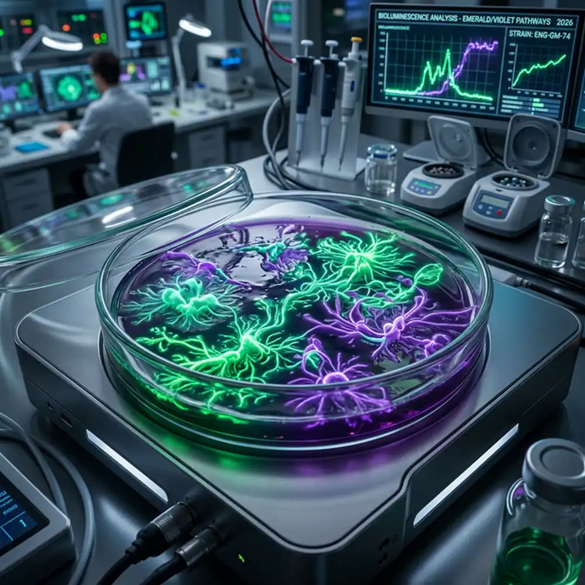

Our Nano-Bio program merges materials science with biological systems to create programmable nanoparticles capable of navigating the body, sensing disease, and delivering cures with atomic precision.

Five interconnected areas driving our nanomedicine agenda.
Lipid nanoparticles and polymeric micelles surface-conjugated with antibodies for tumour-specific drug delivery.
Iron-oxide nanoparticles for MRI contrast enhancement and magnetically guided hyperthermia cancer therapy.
Injectable nano-electrodes that modulate neural circuits to treat inflammatory and autoimmune diseases without drugs.
Wearable nano-sensors detecting circulating tumour DNA in real time from sweat — enabling continuous cancer monitoring.
Protein-coated nanoscaffolds that mediate cell adhesion for bone, cartilage, and vascular tissue regeneration.
Quantum-dot fluorescent probes providing super-resolution imaging of individual molecules inside living cells.

Our latest LNP-CRISPR platform achieved 97% gene-editing efficiency in hepatocellular carcinoma organoids with zero off-target edits, advancing to IND submission for a Phase I human trial.